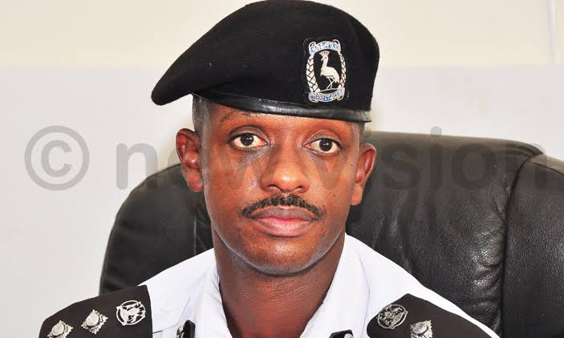

- THE FOUNDERS OF TRAFFIC SAUTI UGANDA
- JOHN MUSINGUZI RUJOKI- HEAD UGANDA NATIONAL ROADS AUTHORITY
- NORMAN MUSINGA-HEAD UGANDA TRAFFIC POLICE


Our Vision is to enhance road safety and infrastructure quality through technology and community engagement,our organisation envisions creating more efficient road networks by raising traffic awareness and effectively combating potholes.
Welcome to Traffic Sauti, your trusted source for traffic awareness and pothole information. Our mission is to provide valuable insights and resources to help improve road safety and infrastructure. in collaboration with Government organisations like UNRA and The Uganda Police at large
Meet the dedicated individuals behind the composure of Traffic Sauti who are passionate about making a difference in our community: